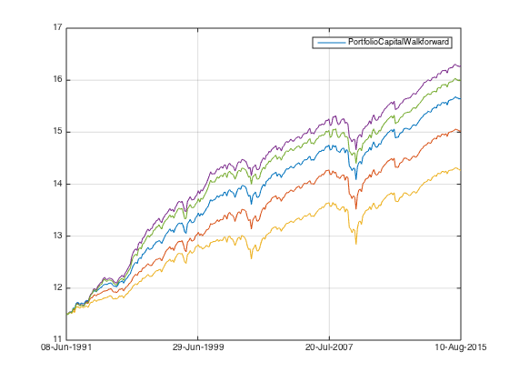

Combined Factors - descend from extraordinary to decent reality (Long only)
In this post I will exam what happens when reality kicks in. For simplicity I will only compare long only portfolios.
Contents
Preparation
Let's load the data from ..
load('../data_equity_list_us.mat'); load('../data_field_list.mat'); load('../data_historical_data_us.mat'); load('../rfr_ts.mat'); load('../cap_benchmark_ts.mat'); load('../spx_ts.mat');
take data sample, load data & the list
index = datasample(1:1300,1000,'Replace',false);
px = fun_load_price(history_us, equity_list_us, index);
px = fun_clean_data(px);
list = equity_list_us(index,:);
load observations
mom_ts = fun_calculate_mom(px); pb_ts = fun_load_observations(history_us, equity_list_us, index,'pb'); cap_ts = fun_load_observations(history_us, equity_list_us, index,'cap'); beta_ts = fun_load_observations(history_us, equity_list_us, index,'beta'); grossmargin_ts = fun_load_observations(history_us, equity_list_us, index,'gm'); turnover_ts = fun_load_observations(history_us, equity_list_us, index,'turnover'); roa_ts = fun_load_observations(history_us, equity_list_us, index,'roa'); leverage_ts = fun_load_observations(history_us, equity_list_us, index,'leverage');
calculate score
score_mom_ts = fun_calculate_score(mom_ts,list,'sectorsort',px); score_pb_ts = -fun_calculate_score(pb_ts,list,'sectorsort',px); score_cap_ts = -fun_calculate_score(cap_ts,list,'sectorsort',px); score_beta_ts = -fun_calculate_score(beta_ts,list,'sectorsort',px); score_leverage_ts = -fun_calculate_score(leverage_ts,list,'sectorsort',px); score_roa_ts = fun_calculate_score(roa_ts,list,'sectorsort',px); score_grossmargin_ts = fun_calculate_score(grossmargin_ts,list,'sectorsort',px); score_turnover_ts = fun_calculate_score(turnover_ts,list,'sectorsort',px); % score_leverage_ts = fillts(score_leverage_ts,0); % score_roa_ts = fillts(score_roa_ts,0); % score_grossmargin_ts = fillts(score_grossmargin_ts,0); % score_turnover_ts = fillts(score_turnover_ts,0); score_quality_ts = score_leverage_ts+score_roa_ts+score_grossmargin_ts+score_turnover_ts; score_quality_ts = fun_combine_score(score_quality_ts);
Trim
score_roa_ts = score_roa_ts(75:end); score_leverage_ts = score_leverage_ts(75:end); score_grossmargin_ts = score_grossmargin_ts(75:end); score_turnover_ts = score_turnover_ts(75:end); score_mom_ts = score_mom_ts(75:end); score_pb_ts = score_pb_ts(75:end); score_cap_ts = score_cap_ts(75:end); score_beta_ts = score_beta_ts(75:end); score_quality_ts = score_quality_ts(75:end); % score_mom_ts = fillts(score_mom_ts,0); % score_pb_ts = fillts(score_pb_ts,0); % score_cap_ts = fillts(score_cap_ts,0); % score_beta_ts = fillts(score_beta_ts,0); % score_quality_ts = fillts(score_quality_ts,0); score_ts = {score_mom_ts; score_pb_ts; score_cap_ts; score_beta_ts; score_quality_ts}; px = px(75:end);
Combine score
score_weight = [0.2 0 0.4 0.1 0.3]; score_combined_ts = score_mom_ts*score_weight(1) + score_pb_ts*score_weight(2) + score_cap_ts*score_weight(3) + score_beta_ts*score_weight(4) + score_quality_ts*score_weight(5); score_combined_ts = fun_combine_score(score_combined_ts);
There is much less securites than you expeced.
score_mat = fts2mat(score_mom_ts); score_mat(not(isnan(score_mat)))=1; plot(nansum(score_mat,2)); hold on; score_mat = fts2mat(score_pb_ts); score_mat(not(isnan(score_mat)))=1; plot(nansum(score_mat,2)); hold on; score_mat = fts2mat(score_cap_ts); score_mat(not(isnan(score_mat)))=1; plot(nansum(score_mat,2)); hold on; score_mat = fts2mat(score_beta_ts); score_mat(not(isnan(score_mat)))=1; plot(nansum(score_mat,2)); hold on; score_mat = fts2mat(score_quality_ts); score_mat(not(isnan(score_mat)))=1; plot(nansum(score_mat,2)); hold on; score_mat = fts2mat(score_combined_ts); score_mat(not(isnan(score_mat)))=1; plot(nansum(score_mat,2)); hold off;
Benchmark
portfolio_weight_eq_weight_ts = fun_portfolio_weight_sector_neutral(score_combined_ts,'equalweight'); portfolio_rt_ts = fun_portfolio_return(px, portfolio_weight_eq_weight_ts); benchmark = [100; 100*exp(fts2mat(cumsum(portfolio_rt_ts)))]; benchmark_ts = fints(px.dates, benchmark,'EqualWeightIndex'); figure plot(log(benchmark_ts)); hold on; plot(log(cap_benchmark_ts)); plot(log(spx_ts)); hold off; legend('off'); snapnow; title('Benchmark comparison'); fun_performance_meansure(benchmark_ts,benchmark_ts,false); fun_performance_meansure(cap_benchmark_ts,benchmark_ts,false); fun_performance_meansure(spx_ts,benchmark_ts,false);
sharpe ratio is 0.70 vol is 0.19 return is 0.13 sharpe ratio is 0.57 vol is 0.17 return is 0.09 sharpe ratio is 0.57 vol is 0.17 return is 0.09
Long only descend
score weighted long only
portfolio_weight_ts = fun_portfolio_weight_sector_neutral(score_combined_ts,'longonly'); portfolio_capital_ts = fun_sequential_backtest_autoadjust(100000, px, benchmark_ts,portfolio_weight_ts,true); plot(log(portfolio_capital_ts)); hold on; snapnow; fun_performance_meansure(portfolio_capital_ts,benchmark_ts,true);
sharpe ratio is 1.04
vol is 0.18
return is 0.19
correlation with benchmark_ts is
1.0000 0.9674
0.9674 1.0000
equal weighted top half
portfolio_weight_ts = fun_portfolio_weight_sector_neutral(score_combined_ts,'longonlyeq'); portfolio_capital_ts = fun_sequential_backtest_autoadjust(100000, px, benchmark_ts,portfolio_weight_ts,true); plot(log(portfolio_capital_ts)); hold on; snapnow; fun_performance_meansure(portfolio_capital_ts,benchmark_ts,true);
sharpe ratio is 0.87
vol is 0.19
return is 0.16
correlation with benchmark_ts is
1.0000 0.9875
0.9875 1.0000
equal weighted all the securities
portfolio_weight_ts = fun_portfolio_weight_sector_neutral(score_combined_ts,'equalweight'); portfolio_capital_ts = fun_sequential_backtest_autoadjust(100000, px, benchmark_ts,portfolio_weight_ts,true); plot(log(portfolio_capital_ts)); hold on; snapnow; fun_performance_meansure(portfolio_capital_ts,benchmark_ts,true);
sharpe ratio is 0.70
vol is 0.19
return is 0.13
correlation with benchmark_ts is
1 1
1 1
score weighted above 0.5
portfolio_weight_ts = fun_portfolio_weight_sector_neutral(score_combined_ts,'longonlym',0.5); portfolio_capital_ts = fun_sequential_backtest_autoadjust(100000, px, benchmark_ts,portfolio_weight_ts,true); plot(log(portfolio_capital_ts)); hold on; snapnow; fun_performance_meansure(portfolio_capital_ts,benchmark_ts,true);
sharpe ratio is 1.15
vol is 0.19
return is 0.22
correlation with benchmark_ts is
1.0000 0.8991
0.8991 1.0000
equal weighted above 0.5
portfolio_weight_ts = fun_portfolio_weight_sector_neutral(score_combined_ts,'topmlongonly',0.5); portfolio_capital_ts = fun_sequential_backtest_autoadjust(100000, px, benchmark_ts,portfolio_weight_ts,true); plot(log(portfolio_capital_ts)); hold off; snapnow; fun_performance_meansure(portfolio_capital_ts,benchmark_ts,true);
sharpe ratio is 1.10
vol is 0.19
return is 0.20
correlation with benchmark_ts is
1.0000 0.9055
0.9055 1.0000
number of securities contained at each score level, 1/0.7/0.5/0.2
portfolio_weight_ts = fun_portfolio_weight_sector_neutral(score_combined_ts,'topmlongonly',1); temp = fts2mat(portfolio_weight_ts); temp(temp>0)=1; plot(nansum(temp,2)) hold on; portfolio_weight_ts = fun_portfolio_weight_sector_neutral(score_combined_ts,'topmlongonly',0.85); temp = fts2mat(portfolio_weight_ts); temp(temp>0)=1; plot(nansum(temp,2)) hold on; portfolio_weight_ts = fun_portfolio_weight_sector_neutral(score_combined_ts,'topmlongonly',0.7); temp = fts2mat(portfolio_weight_ts); temp(temp>0)=1; plot(nansum(temp,2)) hold on; portfolio_weight_ts = fun_portfolio_weight_sector_neutral(score_combined_ts,'topmlongonly',0.5); temp = fts2mat(portfolio_weight_ts); temp(temp>0)=1; plot(nansum(temp,2)) hold on; portfolio_weight_ts = fun_portfolio_weight_sector_neutral(score_combined_ts,'topmlongonly',0.2); temp = fts2mat(portfolio_weight_ts); temp(temp>0)=1; plot(nansum(temp,2)) hold off;
performance at each percentile
portfolio_weight_ts = fun_portfolio_weight_sector_neutral(score_combined_ts,'topmlongonly',1); portfolio_capital_ts = fun_sequential_backtest_autoadjust(100000, px, benchmark_ts,portfolio_weight_ts,true); plot(log(portfolio_capital_ts)); hold on; snapnow; fun_performance_meansure(portfolio_capital_ts,benchmark_ts,true); portfolio_weight_ts = fun_portfolio_weight_sector_neutral(score_combined_ts,'topmnlongonly',1,0.1); portfolio_capital_ts = fun_sequential_backtest_autoadjust(100000, px, benchmark_ts,portfolio_weight_ts,true); plot(log(portfolio_capital_ts)); hold on; snapnow; fun_performance_meansure(portfolio_capital_ts,benchmark_ts,true); portfolio_weight_ts = fun_portfolio_weight_sector_neutral(score_combined_ts,'topmlongonly',0.2); portfolio_capital_ts = fun_sequential_backtest_autoadjust(100000, px, benchmark_ts,portfolio_weight_ts,true); plot(log(portfolio_capital_ts)); hold on; snapnow; fun_performance_meansure(portfolio_capital_ts,benchmark_ts,true);
sharpe ratio is 0.87
vol is 0.19
return is 0.16
correlation with benchmark_ts is
1.0000 0.9875
0.9875 1.0000
sharpe ratio is 0.85
vol is 0.19
return is 0.16
correlation with benchmark_ts is
1.0000 0.9873
0.9873 1.0000
sharpe ratio is 1.29
vol is 0.26
return is 0.34
correlation with benchmark_ts is
1.0000 0.7006
0.7006 1.0000
the run up to dotcom bubble contributed a lot to the extraordinary performance in the 90s. But notice that to 0.2 only contains signle digit number of securities. And the extraordinary momentum stock only happened in the top 1% for the period.
portfolio_weight_ts = fun_portfolio_weight_sector_neutral(score_combined_ts,'topmnlongonly',0.5,0.2); portfolio_capital_ts = fun_sequential_backtest_autoadjust(100000, px, benchmark_ts,portfolio_weight_ts,true); plot(log(portfolio_capital_ts)); hold on; snapnow; fun_performance_meansure(portfolio_capital_ts,benchmark_ts,true);
sharpe ratio is 0.98
vol is 0.18
return is 0.18
correlation with benchmark_ts is
1.0000 0.9069
0.9069 1.0000
notice how even with 30 securities, the portfolio volatility is very close to the one with 150 securities. The outperformance is again mainly due to the 90s, post dotcom bubble period, there are very little visible outperformance compare to full long only.
portfolio_weight_ts = fun_portfolio_weight_sector_neutral(score_combined_ts,'topmnlongonly',0.7,0.5); portfolio_capital_ts = fun_sequential_backtest_autoadjust(100000, px, benchmark_ts,portfolio_weight_ts,true); plot(log(portfolio_capital_ts)); hold on; snapnow; fun_performance_meansure(portfolio_capital_ts,benchmark_ts,true); portfolio_weight_ts = fun_portfolio_weight_sector_neutral(score_combined_ts,'topmnlongonly',0.85,0.7); portfolio_capital_ts = fun_sequential_backtest_autoadjust(100000, px, benchmark_ts,portfolio_weight_ts,true); plot(log(portfolio_capital_ts)); hold on; snapnow; fun_performance_meansure(portfolio_capital_ts,benchmark_ts,true); portfolio_weight_ts = fun_portfolio_weight_sector_neutral(score_combined_ts,'topmnlongonly',1,0.85); portfolio_capital_ts = fun_sequential_backtest_autoadjust(100000, px, benchmark_ts,portfolio_weight_ts,true); plot(log(portfolio_capital_ts)); hold on; snapnow; fun_performance_meansure(portfolio_capital_ts,benchmark_ts,true);
sharpe ratio is 1.00
vol is 0.19
return is 0.19
correlation with benchmark_ts is
1.0000 0.9513
0.9513 1.0000
sharpe ratio is 0.75
vol is 0.20
return is 0.15
correlation with benchmark_ts is
1.0000 0.9578
0.9578 1.0000
sharpe ratio is 0.57
vol is 0.21
return is 0.12
correlation with benchmark_ts is
1.0000 0.9687
0.9687 1.0000
performance decreased quiet a lot when we move to the middle(signal-less tier) of the scores. 0.62 sharpe is not any better than cap weighted index.
portfolio_weight_ts = fun_portfolio_weight_sector_neutral(score_combined_ts,'equalweight'); portfolio_capital_ts = fun_sequential_backtest_autoadjust(100000, px, benchmark_ts,portfolio_weight_ts,true); plot(log(portfolio_capital_ts)); hold off; snapnow; fun_performance_meansure(portfolio_capital_ts,benchmark_ts,true);
sharpe ratio is 0.70
vol is 0.19
return is 0.13
correlation with benchmark_ts is
1 1
1 1
This walk through shows that:
- scores do differentiate the portfolio performance
- number of securites has surprisingly little to do with portfolio volatility, 30 securities portfolio has 18% long term volatility.
- extra performance for past 25 years has a lot to do with a few stocks in the 90s.
let's compare with surgical, topm 0.6 contains about 50 securities. let's compare surgical 50 with this one.
portfolio_weight_ts = fun_portfolio_weight_sector_neutral(score_combined_ts,'longonly'); portfolio_rt_ts = fun_portfolio_return(px,portfolio_weight_ts); portfolio_capital_ts = 100000*exp(cumsum(portfolio_rt_ts)); plot(log(portfolio_capital_ts)); hold on; snapnow; portfolio_capital_ts = fun_sequential_backtest_autoadjust(100000, px, benchmark_ts,portfolio_weight_ts,true); plot(log(portfolio_capital_ts)); fun_performance_meansure(portfolio_capital_ts,benchmark_ts,false);
sharpe ratio is 1.04 vol is 0.18 return is 0.19
weight * rt match up perfectly with walkforward test, nice ~
topmlongonly 0.6, that's equal weight
portfolio_weight_ts = fun_portfolio_weight_sector_neutral(score_combined_ts,'topmlongonly',0.6); portfolio_capital_ts = fun_sequential_backtest_autoadjust(100000, px, benchmark_ts,portfolio_weight_ts,true); plot(log(portfolio_capital_ts)); hold on; snapnow; fun_performance_meansure(portfolio_capital_ts,benchmark_ts,false);
sharpe ratio is 1.06 vol is 0.18 return is 0.19
longonlym 0.6, that's score weight
portfolio_weight_ts = fun_portfolio_weight_sector_neutral(score_combined_ts,'longonlym',0.6); portfolio_capital_ts = fun_sequential_backtest_autoadjust(100000, px, benchmark_ts,portfolio_weight_ts,true); plot(log(portfolio_capital_ts)); hold on; snapnow; fun_performance_meansure(portfolio_capital_ts,benchmark_ts,false);
sharpe ratio is 1.11 vol is 0.18 return is 0.20
topmlongonly 0.6 select about 50 securities and equal weight them, this should be very close to surgical 50
portfolio_weight_ts = fun_portfolio_weight_sector_neutral(score_combined_ts,'longonly'); portfolio_capital_ts = fun_sequential_backtest_surgical(100000, px, benchmark_ts, rfr_ts, portfolio_weight_ts,list,1, 1, true,50,1); plot(log(portfolio_capital_ts)); hold on; snapnow; fun_performance_meansure(portfolio_capital_ts,benchmark_ts,false);
sharpe ratio is 1.08 vol is 0.18 return is 0.20
as expected! notice that if I use topmlongonly 0.6 to generate portfolio_weight_ts input for surgical, it will give me bogus result. Since portfolio_weight_ts will already be equal weight in that case, and top 50 securities would be selected almost randomly...
since score weight and equal weight cause 1% per annual return difference. Let's amend surgical to make it score weighted as well.
portfolio_capital_ts = fun_sequential_backtest_surgical_debug(100000, px, benchmark_ts, rfr_ts, portfolio_weight_ts,list,1, 1, true,50,1,true,true,true);
plot(log(portfolio_capital_ts));
hold off;
snapnow;
fun_performance_meansure(portfolio_capital_ts,benchmark_ts,false);

sharpe ratio is 1.13 vol is 0.18 return is 0.21
B-E-A-U-tiful, we get 1% extra from shift surgical to score weight instead of equal weight. More importantly it shows that surgical procedure ties up with normal walkforward routine & basic weight*return!
The effect of rebalancing frequency & number of securities.
Rebalancing frequency
monthly
portfolio_weight_ts = fun_portfolio_weight_sector_neutral(score_combined_ts,'longonly'); portfolio_capital_ts = fun_sequential_backtest_surgical_debug(100000, px, benchmark_ts, rfr_ts, portfolio_weight_ts,list,1, 1, true,50,1,false,true,true); plot(log(portfolio_capital_ts)); hold on; snapnow; fun_performance_meansure(portfolio_capital_ts,benchmark_ts,false);
sharpe ratio is 1.12 vol is 0.18 return is 0.21
quarterly
portfolio_weight_ts = fun_portfolio_weight_sector_neutral(score_combined_ts,'longonly'); portfolio_capital_ts = fun_sequential_backtest_surgical_debug(100000, px, benchmark_ts, rfr_ts, portfolio_weight_ts,list,1, 1, true,50,3,false,true,true); plot(log(portfolio_capital_ts)); hold on; snapnow; fun_performance_meansure(portfolio_capital_ts,benchmark_ts,false);
sharpe ratio is 1.08 vol is 0.18 return is 0.20
annually
portfolio_weight_ts = fun_portfolio_weight_sector_neutral(score_combined_ts,'longonly'); portfolio_capital_ts = fun_sequential_backtest_surgical_debug(100000, px, benchmark_ts, rfr_ts, portfolio_weight_ts,list,1, 1, true,50,12,false,true,true); plot(log(portfolio_capital_ts)); hold off; snapnow; fun_performance_meansure(portfolio_capital_ts,benchmark_ts,false);
sharpe ratio is 1.06 vol is 0.18 return is 0.19
the performance decrease as we rebalance less frequently. But most of the outperformance is in late 90s, when more frequent rebalancing does matters. The situation would be very different when I go market neutral...
number of securities
portfolio_weight_ts = fun_portfolio_weight_sector_neutral(score_combined_ts,'longonly');
plot(fts2mat(portfolio_weight_ts));
snapnow;
temp = fts2mat(portfolio_weight_ts);
temp(not(isnan(temp)))=1;
plot(nansum(temp,2));
snapnow;
I have this many securities to choose...
5 securities
portfolio_capital_ts = fun_sequential_backtest_surgical_debug(100000, px, benchmark_ts, rfr_ts, portfolio_weight_ts,list,1, 1, true,5,1,false,true,true);
plot(log(portfolio_capital_ts));
hold on;
snapnow;
fun_performance_meansure(portfolio_capital_ts,benchmark_ts,false);
sharpe ratio is 1.24 vol is 0.27 return is 0.34
20 securities
portfolio_capital_ts = fun_sequential_backtest_surgical_debug(100000, px, benchmark_ts, rfr_ts, portfolio_weight_ts,list,1, 1, true,20,1,false,true,true);
plot(log(portfolio_capital_ts));
hold on;
snapnow;
fun_performance_meansure(portfolio_capital_ts,benchmark_ts,false);
sharpe ratio is 1.22 vol is 0.20 return is 0.24
50 securities
portfolio_capital_ts = fun_sequential_backtest_surgical_debug(100000, px, benchmark_ts, rfr_ts, portfolio_weight_ts,list,1, 1, true,50,1,false,true,true);
plot(log(portfolio_capital_ts));
hold on;
snapnow;
fun_performance_meansure(portfolio_capital_ts,benchmark_ts,false);
sharpe ratio is 1.12 vol is 0.18 return is 0.21
100 securities
portfolio_capital_ts = fun_sequential_backtest_surgical_debug(100000, px, benchmark_ts, rfr_ts, portfolio_weight_ts,list,1, 1, true,100,1,false,true,true);
plot(log(portfolio_capital_ts));
hold on;
snapnow;
fun_performance_meansure(portfolio_capital_ts,benchmark_ts,false);
sharpe ratio is 1.05 vol is 0.18 return is 0.19
200 securities
portfolio_capital_ts = fun_sequential_backtest_surgical_debug(100000, px, benchmark_ts, rfr_ts, portfolio_weight_ts,list,1, 1, true,200,1,false,true,true);
plot(log(portfolio_capital_ts));
hold off;
snapnow;
fun_performance_meansure(portfolio_capital_ts,benchmark_ts,false);
sharpe ratio is 1.01 vol is 0.18 return is 0.19
notice that the portfolio volatility decrease very little as I increase number of securities... good and bad...
Sanity check
portfolio_weight_ts = fun_portfolio_weight_sector_neutral(score_combined_ts,'longonly');
50 securities no cost, score weight
portfolio_capital_ts = fun_sequential_backtest_surgical_debug(100000, px, benchmark_ts, rfr_ts, portfolio_weight_ts,list,1, 1, true,50,1,true,true,true);
plot(log(portfolio_capital_ts));
hold on;
snapnow;
fun_performance_meansure(portfolio_capital_ts,benchmark_ts,false);
sharpe ratio is 1.13 vol is 0.18 return is 0.21
50 securities with cost, score weight
portfolio_capital_ts = fun_sequential_backtest_surgical_debug(100000, px, benchmark_ts, rfr_ts, portfolio_weight_ts,list,1, 1, true,50,1,false,true,true);
plot(log(portfolio_capital_ts));
hold on;
snapnow;
fun_performance_meansure(portfolio_capital_ts,benchmark_ts,false);
sharpe ratio is 1.12 vol is 0.18 return is 0.21
50 securities with cost, equal weight
portfolio_capital_ts = fun_sequential_backtest_surgical_debug(100000, px, benchmark_ts, rfr_ts, portfolio_weight_ts,list,1, 1, true,50,1,false,true,false);
plot(log(portfolio_capital_ts));
hold on;
snapnow;
fun_performance_meansure(portfolio_capital_ts,benchmark_ts,false);
sharpe ratio is 1.08 vol is 0.18 return is 0.20
50 securities without cost, score weight, 2x leverage
portfolio_capital_ts = fun_sequential_backtest_surgical_debug(100000, px, benchmark_ts, rfr_ts, portfolio_weight_ts,list,2, 1, true,50,1,true,true,true);
plot(log(portfolio_capital_ts));
hold on;
snapnow;
fun_performance_meansure(portfolio_capital_ts,benchmark_ts,false);
sharpe ratio is 1.13 vol is 0.37 return is 0.42
crazy drawdown...
50 securities with cost, score weight, 2x leverage
portfolio_capital_ts = fun_sequential_backtest_surgical_debug(100000, px, benchmark_ts, rfr_ts, portfolio_weight_ts,list,2, 1, true,50,1,false,false,true);
plot(log(portfolio_capital_ts));
hold on;
snapnow;
fun_performance_meansure(portfolio_capital_ts,benchmark_ts,false);
sharpe ratio is 1.10 vol is 0.37 return is 0.40
50 securities with cost, with full interest charge, score weight, 2x leverage
portfolio_capital_ts = fun_sequential_backtest_surgical_debug(100000, px, benchmark_ts, rfr_ts, portfolio_weight_ts,list,2, 1, true,50,1,false,true,true);
plot(log(portfolio_capital_ts));
hold off;
snapnow;
fun_performance_meansure(portfolio_capital_ts,benchmark_ts,false);
sharpe ratio is 0.99 vol is 0.37 return is 0.36
equal weight long, score weight off
portfolio_weight_ts = fun_portfolio_weight_sector_neutral(score_combined_ts,'equalweight'); portfolio_capital_ts = fun_sequential_backtest_surgical_debug(100000, px, benchmark_ts, rfr_ts, portfolio_weight_ts,list,1, 1, true,50,1,false,true,false); plot(log(portfolio_capital_ts)); hold on; snapnow; fun_performance_meansure(portfolio_capital_ts,benchmark_ts,false);
sharpe ratio is 0.64 vol is 0.21 return is 0.13
equal weight long, score weight on.
portfolio_weight_ts = fun_portfolio_weight_sector_neutral(score_combined_ts,'equalweight'); portfolio_capital_ts = fun_sequential_backtest_surgical_debug(100000, px, benchmark_ts, rfr_ts, portfolio_weight_ts,list,1, 1, true,50,1,false,true,true); plot(log(portfolio_capital_ts)); hold on; snapnow; fun_performance_meansure(portfolio_capital_ts,benchmark_ts,false);
sharpe ratio is 0.64 vol is 0.21 return is 0.13
as expected.
equal weight long, and short, no cost. 200 security v.s. full universe.
portfolio_weight_ts = fun_portfolio_weight_sector_neutral(score_combined_ts,'equalweight'); portfolio_capital_ts = fun_sequential_backtest_surgical_debug(100000, px, benchmark_ts, rfr_ts, portfolio_weight_ts,list,1, 1, false,200,1,true,true,true); plot(log(portfolio_capital_ts)); hold on; snapnow;
equal weight long, and short, with cost. 200 security v.s. full universe.
portfolio_weight_ts = fun_portfolio_weight_sector_neutral(score_combined_ts,'equalweight'); portfolio_capital_ts = fun_sequential_backtest_surgical_debug(100000, px, benchmark_ts, rfr_ts, portfolio_weight_ts,list,1, 1, false,200,1,false,true,true); plot(log(portfolio_capital_ts)); hold on; snapnow; fun_performance_meansure(portfolio_capital_ts,benchmark_ts,false);
sharpe ratio is -1.79 vol is 0.01 return is -0.02
the constant drift is transaction cost.
Conclusion
The result is SOLID.